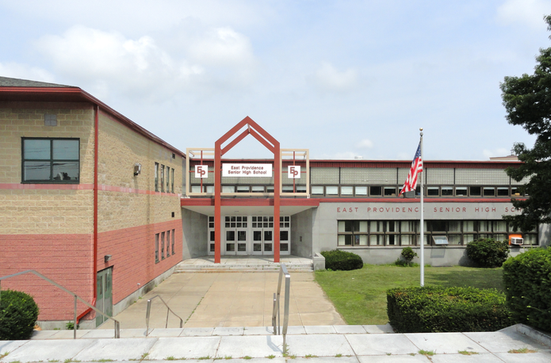

My name is Nathaniel Eisel. This is my second quarter at NEIT’s cyber security program. I’ve always had an interest in computer security, its elements, and computers themselves. Since I was young I’ve worked with them, my first computer being a 90’s era Compaq Armada laptop running Windows 98. When I was in high school, I participated in a computer security competition called CyberPatriot. Of the 4 teams the school oversaw, my team was on top all 4 years. This combined with an incident where I found a flaw in the school's internet security got me known as The Computer Guy. I do my best to both work and study, working as a delivery driver for a local chain restaurant. I always seek to improve my current skill set, and I believe that NEIT is the perfect place to do so.